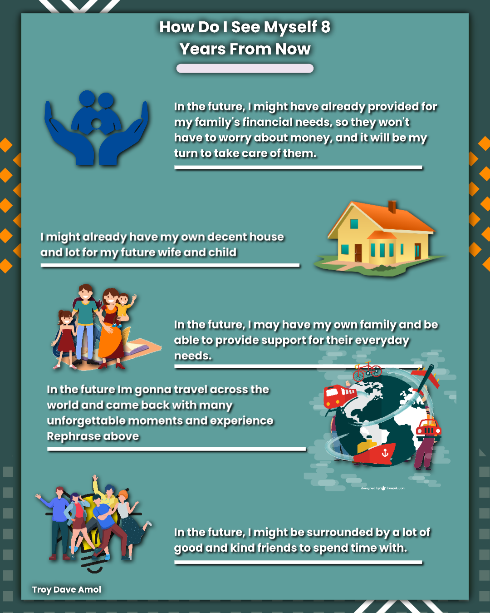

Self-Introduction
Hi, I'm Troy Dave Amol. I enjoy playing online games, with Mobile Legends being my absolute favorite. As for sports, I have a passion for basketball, and part of my daily routine includes jogging and honing my dribbling skills. Engaging in this sport has significantly boosted my self-confidence over time.When it comes to socializing and communication, I identify as an introvert. I'm not particularly inclined to initiate conversations, and I tend to be reserved in my speech. For some reason, I feel a bit nervous when talking to someone.
